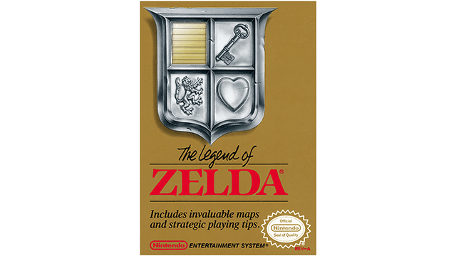
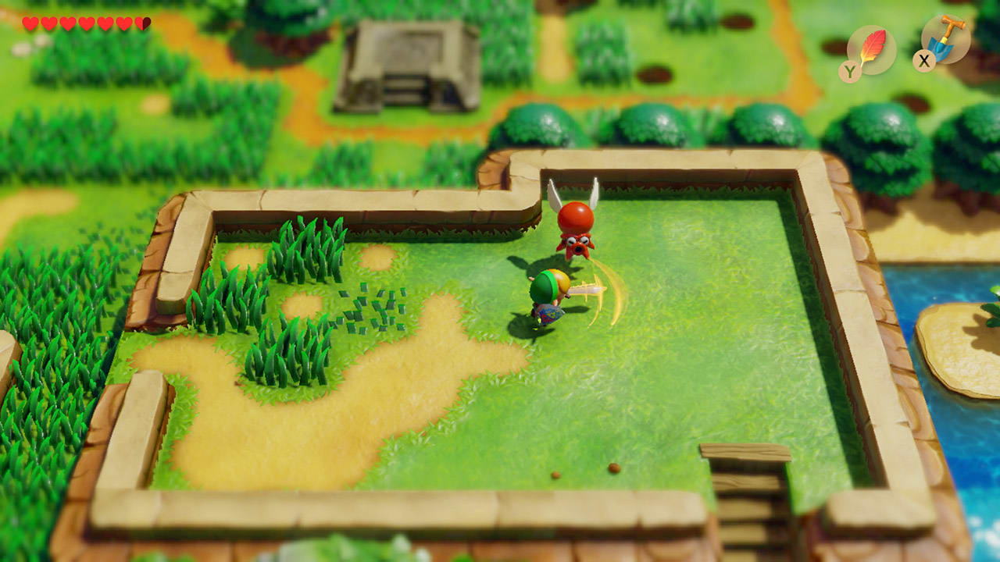
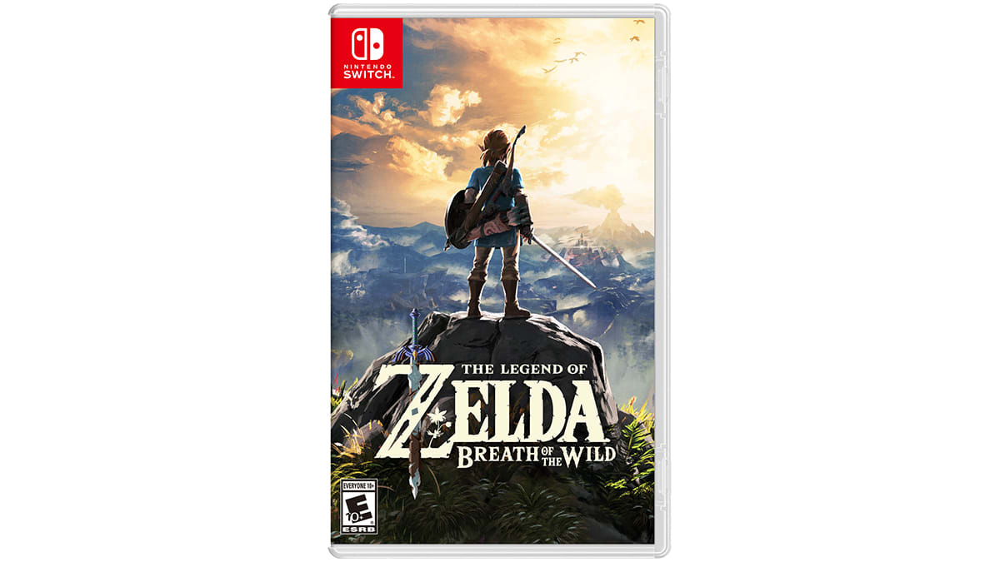
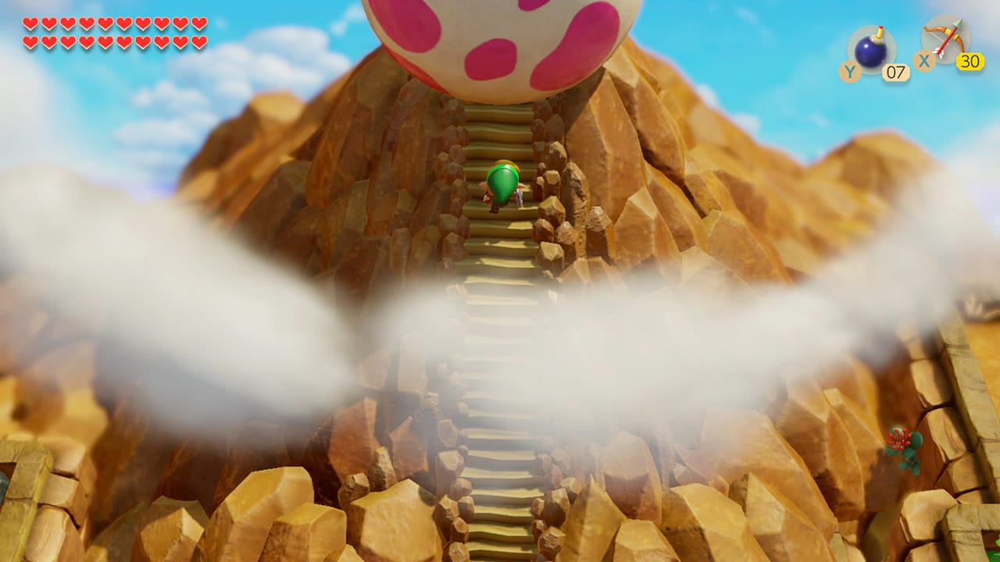

The Legend of Zelda
The 1986 NES original drops players into Hyrule with little direction. Its secrets, dungeons, and open overworld established the series as an adventure built around curiosity.
See how The Legend of Zelda, Link's Awakening, and Breath of the Wild reinvent exploration for three different generations.
Start exploringThree different approaches to discovery, puzzles, and the kingdom of Hyrule.

The 1986 NES original drops players into Hyrule with little direction. Its secrets, dungeons, and open overworld established the series as an adventure built around curiosity.

The 2019 Nintendo Switch remake gives Koholint Island a colorful toy-like style while preserving the clever puzzles, unusual characters, and dreamlike mystery of the Game Boy classic.

The 2017 adventure transforms Hyrule into a huge connected world. Players can climb almost anywhere, experiment with physics, and choose their own route toward the final challenge.
Link's Awakening stands apart because its adventure happens far from Hyrule. After a storm leaves Link stranded on Koholint Island, he must find eight instruments and awaken the mysterious Wind Fish. The remake keeps the original top-down structure while presenting the island like a miniature diorama.

The tools changed across the decades, but curiosity still leads the way.
The NES game asks players to test walls, burn bushes, and remember clues. Breath of the Wild expands that curiosity into a world of interacting systems.
See the gamesEach game rewards exploring beyond the obvious route, studying the environment, and returning with new knowledge.
Visit KoholintChoose the NES original for pure discovery, Link's Awakening for a focused puzzle adventure, or Breath of the Wild for complete freedom.
Compare the three games